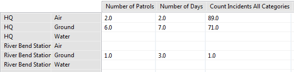

Um resumo sintetiza os dados brutos e permite que eles sejam agrupados em diferentes categorias. Resumos de resultados só podem ser visualizados em tabelas.
 |
Exemplo de Consulta de Resumo |
Itens que podem ser resumidos incluem atributos totais de patrulhas (número de patrulhas, distância percorrida etc) e categorias de modelo de dados (número total de observações de armadilhas) e atributos numéricos de modelo de dados (número total de armas). Além disso, os encontros de taxa podem ser calculados (quantos X por km, horas-homem, tempo). Múltiplos valores podem ser calculados em uma única consulta.
Os valores podem ser agrupados por atributo de patrulha (equipe, base, madado), equipe (ano, mês, etc), áreas (setores gerenciais, áreas administrativas), categorias de modelos de dados e atributos de modelo de dados de lista ou árvore . Múltiplos grupos por podem ser selecionados para uma única consulta.